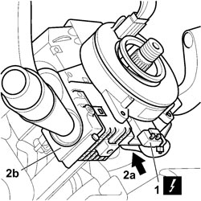
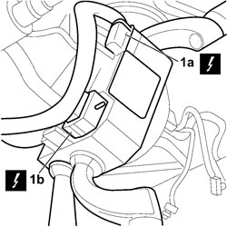
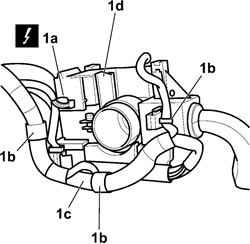

5550A10 STALK UNIT ASSEMBLY - R+R
- Path
- Procedures > 55 ELECTRICAL EQUIPMENT > 5550 WARNING AND MANOEUVRING INDICATORS > 5550A STALK UNIT > 5550A10 STALK UNIT ASSEMBLY - R+R
- Kind
- repair procedure (removal / refitting; the operation number is the code)
- Applies to
- all engines; all production periods
- Interactive page
- https://sloeber94.github.io/elrnDB-fCrm/en/#/194000762
Applies to: all engines; all production periods
- Turn the ignition key to the OFF position and extract it.
- Disconnect the battery leads and insulate them.
- Wait for 10 minutes before continuing.
Description | Connector | |
|---|---|---|
BATTERY |
Applies to: all engines; all production periods
 Removing
Removing
 Refitting
RefittingOp. 5580C18 AIR BAG MODULE - R+R
Op. 4110A10 STEERING WHEEL - R+R FOR REPLACEMENT OR CHECKS
Op. 7040A26 STEERING COLUMN TRIM - R+R
1. Disconnect the electrical connection for clock spring.
Description | Connector | |
|---|---|---|
1 | CLOCK SPRING COUPLING |

Applies to: all engines; all production periods
1. Release the anchorages and disconnect connections (1a) and (1b).
Description | Connector | |
|---|---|---|
1a | ABS COUPLING | See D005 ABS COUPLING |
Description | Connector | |
|---|---|---|
1b | ABS COUPLING | See D005 ABS COUPLING |
Description | Connector | |
|---|---|---|
1b | ABS COUPLING | See D005 ABS COUPLING |

Applies to: all engines; all production periods
- Turn the stalk unit through 180°.
1. Disconnect the electrical connection of the Cruise Control device on the rear of the stalk unit, release wiring harness (1c) from anchorages (1b) and remove the stalk unit (1d).
Description | Connector | |
|---|---|---|
1a | STEERING COLUMN SWITCH UNIT |

Applies to: all engines; all production periods
Refitting
Removing- Connect the electrical connections to the stalk unit complete with clock spring.
Description | Connector | |
|---|---|---|
CLOCK SPRING COUPLING |
Description | Connector | |
|---|---|---|
ABS COUPLING | See D005 ABS COUPLING |
Description | Connector | |
|---|---|---|
STEERING COLUMN SWITCH UNIT |
- Engage the wiring harness in the anchorages
- Position the stalk unit complete with clock spring on the steering column.
Op. 7040A26 STEERING COLUMN TRIM - R+R
Op. 5580C18 AIR BAG MODULE - R+R
- Connect the battery terminals.
Description | Connector | |
|---|---|---|
BATTERY |
Topics linked from this page (7)
- 4110A10 STEERING WHEEL - R+R FOR REPLACEMENT OR CHECKS
- 5580C AIR BAG SYSTEM
- 5580C18 AIR BAG MODULE - R+R
- 7040A26 STEERING COLUMN TRIM - R+R
- A001 BATTERY
- D047 CLOCK SPRING COUPLING
- H005 STEERING COLUMN SWITCH UNIT
Topics that link to this page (17)
- J001 WINDSCREEN/REARSCREEN WASHERS NOT WORKING
- J002 WINDSCREEN WIPERS NOT WORKING
- J004 BACK WINDOW WIPER NOT WORKING
- J005 BACK WINDOW WASHER IS NOT WORKING
- K006 TRIP METER DOES NOT ZERO
- K015 CLOCK NOT WORKING
- N020 HORNS NOT WORKING
- N023 HORNS WORKING ENDLESSLY
- 5540BA DIPPED BEAM CIRCUIT CHECK
- 3330B02 PEDAL ASSEMBLY - R.R
- 3330B08 PEDAL MOUNT ASSEMBLY - R R AND OVERHAUL WITH FACIA TRIM SUPPORT BEAM REMOVED FOR RIGHT-HAND DRIVE VERSIONS
- 3330B22 BRAKE PEDAL - R+R FOR MANUAL GEARBOX VERSIONS
- 3330B26 CLUTCH PEDAL - R+R
- 3330B38 PEDAL UNIT MOUNT - R.R.
- 4110A30 SUPPORT WITH STEERING CONTROL SHAFTS - R+R
- 5580A10 CRUISE CONTROL LEVER ASSEMBLY - R+R
- 5580C12 CLOCK SPRING FOR AIR BAG MODULE ON STEERING WHEEL - R.R